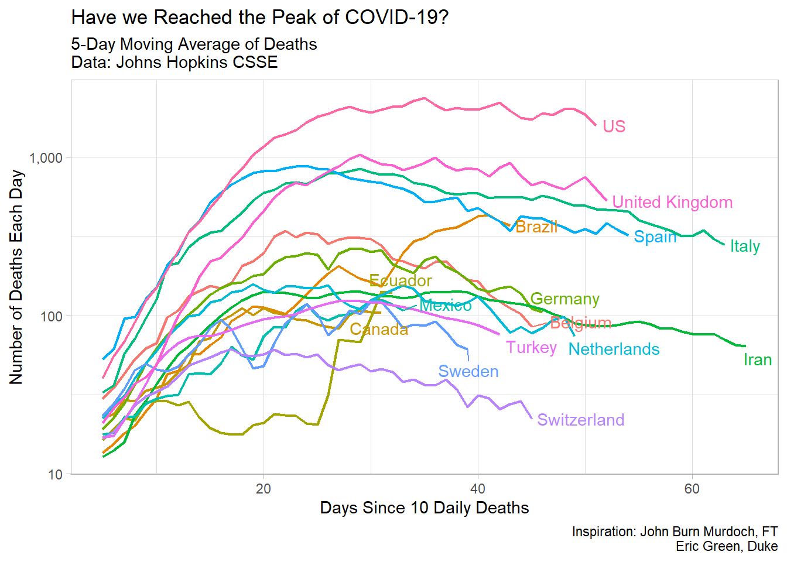

Today we will create a plot using the deaths data, and then save the plot as a .png file to upload to Edsby. Hopefully things went reasonably well last week with adding to the plots. If you added more, or changed, counties, you now have a plot of your own.
Let’s save a plot:
We will need to use a new package today, so you’ll need to install the tibbletime package to allow us to use a folling mean function.
In the console, please type: install.packages(“tibbletime”) and run the command.
In order to work with R, you’ll need access to many different packages that allow the user to use different tools. Each of these packages below has a function. Most importantly, the tidyverse package allows the user to import, tidy, transform, and visualize data using commands that are relatively intuitive.
The other packages each perform some function in this module.
library(tidyverse)
library(janitor)
library(lubridate)
library(ggrepel)
library(knitr)
library(tibbletime)I have set the theme to light to avoid the gray background in graphics.
theme_set(theme_light())We will load the data using the data source of the following website Johns Hopkins CSSE Map
In order to get the data, we will use a link to the Johns Hopkins CSSE data in GitHub. The following command will load the data for us using the read_csv command.
covid_deaths <- read_csv("https://raw.githubusercontent.com/CSSEGISandData/COVID-19/master/csse_covid_19_data/csse_covid_19_time_series/time_series_covid19_deaths_global.csv")Once you run this line of code, you should see the covid_deaths object in the Environment pane. If you click the object in the environment pane, you can view the data in a tabel format in the Source pane in the upper left.
Use the viewer to inspect the data and you’ll see we have the same issue that we had last time, so we’ll use the same process as last time to convert the data into a usuable (tidy) format. Remember, tidy data has one row that represents a single observation. Each row will represent a single day’s number of deaths in a single country.
We would pefer to use YYYY-MM-DD as our date input, so we will use the following command to rename the columns with the dates formatted correctly.
old_names_deaths <- colnames(covid_deaths)[5:ncol(covid_deaths)]
new_names_deaths <- parse_date(colnames(covid_deaths)[5:ncol(covid_deaths)], "%m/%d/%y")
covid_deaths<- covid_deaths %>%
rename_at(vars(old_names_deaths), function(x) new_names_deaths)Then we will reshape the data into a long tidy format using the pivot_longer() command. Now for each country observation (row), we will move the dates under the country. We will call this new dataset covid_deaths_tidy. You can inspect it in the environment to see how it looks different from the covid_deaths that we input from GitHub.
We’ll also assume the janitor package is still broken in the
covid_deaths_tidy <- covid_deaths %>%
pivot_longer(
cols = -`Province/State`:-Long,
names_to = "date",
values_to = "deaths"
) %>% as_tibble() %>%
mutate(date = as.Date(date)) %>%
set_names(tolower(make.names(names(.)))) # The janitor package was broken in the cloud, here is the fix| Country | deaths |
|---|---|
| US | 67682 |
| Italy | 28884 |
| United Kingdom | 28446 |
| Spain | 25264 |
| Belgium | 7844 |
| Brazil | 7051 |
| Germany | 6866 |
| Iran | 6203 |
| Netherlands | 5056 |
| China | 4512 |
| Turkey | 3397 |
| Sweden | 2679 |
| Canada | 2206 |
| Mexico | 2154 |
| Switzerland | 1762 |
| Ecuador | 1564 |
| India | 1391 |
| Ireland | 1303 |
| Peru | 1286 |
| Russia | 1280 |
To create a plot that has the names of the countries with the most deaths, we will assign the names to a list called top_20, where we will call on it to produce a plot.
top_15 <-
covid_deaths_tidy %>%
group_by(country.region) %>%
summarise(deaths = max(deaths)) %>%
filter(country.region != "France") %>%
filter(country.region != "China") %>%
arrange(desc(deaths)) %>%
slice(1:15) covid_daily_deaths <-
covid_deaths_tidy %>%
filter(country.region != "France") %>%
group_by(country.region, date) %>%
summarise(deaths = max(deaths)) %>%
mutate(daily_deaths = c(deaths[1], diff(deaths))) %>%
filter(daily_deaths >= 10) %>%
mutate(days = 1:n()) %>%
mutate(label = if_else(days == max(days),
country.region,
NA_character_)) %>%
ungroup() Remember that you must have installed the tibbletime package and also loaded it in the library.
roll_mean_5 <- rollify(mean, window = 5) # Create a 5-day rolling average
covid_daily_deaths %>%
filter(country.region %in% top_15$country.region) %>%
group_by(country.region) %>%
mutate(deaths_avg = roll_mean_5(daily_deaths)) %>%
ungroup() %>%
filter(!is.na(deaths_avg)) %>%
ggplot(aes(days, deaths_avg, colour = country.region))+
geom_line(size = .75)+
geom_text_repel(aes(label = label),
nudge_x = 1,
na.rm = TRUE)+
scale_y_log10(labels = scales::comma_format())+
scale_color_discrete(name = "Country")+
theme(legend.position = "none")+
labs(title = "Have we Reached the Peak of COVID-19?",
x = "Days Since 10 Daily Deaths",
y = "Number of Deaths Each Day",
subtitle = "5-Day Moving Average of Deaths\nData: Johns Hopkins CSSE",
caption = "Inspiration: John Burn Murdoch, FT\nEric Green, Duke")
In order to save your plot, you have two choices. Firstly, you can save it using the viewer pane in the lower right.
See the Plots pane “Export” button
Once you click the Export button, you can change a variety of options about the plots.
Choose aspect ratios and file names and types
Alternatively, you can choose to save your plot using code by assigning your plot to an object, and then using the ggsave() command to save it. See below:
plot_1 <-
covid_daily_deaths %>%
filter(country.region %in% top_15$country.region) %>%
group_by(country.region) %>%
mutate(deaths_avg = roll_mean_5(daily_deaths)) %>%
ungroup() %>%
filter(!is.na(deaths_avg)) %>%
ggplot(aes(days, deaths_avg, colour = country.region))+
geom_line(size = .75)+
geom_text_repel(aes(label = label),
nudge_x = 1,
na.rm = TRUE)+
scale_y_log10(labels = scales::comma_format())+
scale_color_discrete(name = "Country")+
theme(legend.position = "none")+
labs(title = "Have we Reached the Peak of COVID-19?",
x = "Days Since 10 Daily Deaths Recorded",
y = "Number of Deaths Each Day",
subtitle = "5-Day Moving Average of Deaths\nData: Johns Hopkins CSSE",
caption = "Inspiration: John Burn Murdoch, FT\nEric Green, Duke")
ggsave("plot_save_example.png", plot = plot_1, height = 5, width = 7)